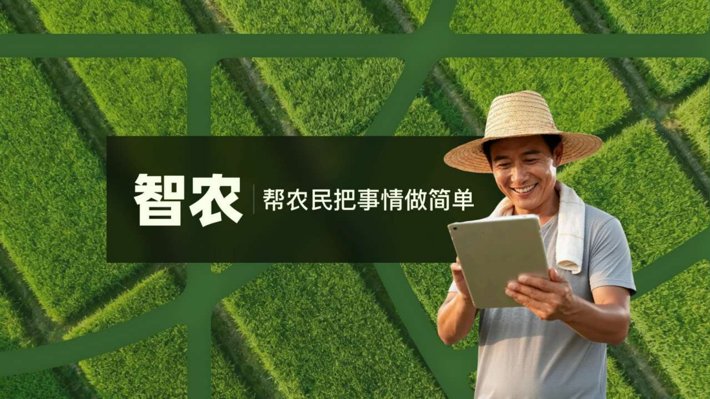
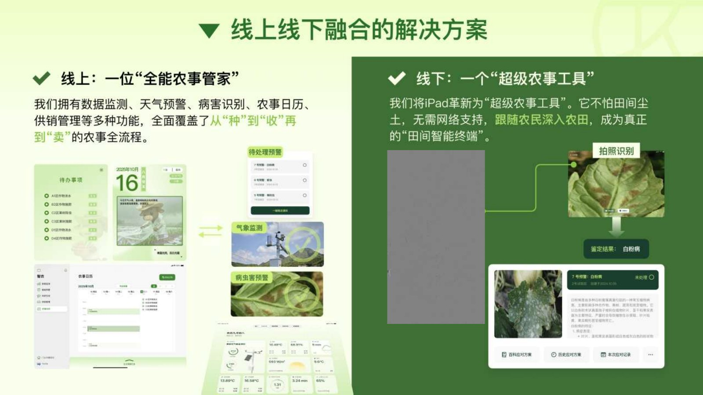

风险“难”预料
种植仍高度依赖个人经验。病虫害响应滞后，减产风险难以及时防范。

智农 FarmSync · iPad 应用
第十届中国高校计算机大赛 · 移动应用创新赛
种植仍高度依赖个人经验。病虫害响应滞后，减产风险难以及时防范。
已有工具往往复杂、功能单一，难以贴合真实田间工作与农户的使用习惯。
生产者与市场信息之间存在距离，好货难卖、优产难优价。
农业信息复杂且高度依赖情境。设计从农户的日常工作出发，与农学背景伙伴一起拆解生产流程，再把专业判断转成容易理解、能够执行的界面任务。
观察农户如何巡田、记录问题与安排农事，把真实工作流作为界面结构的起点。
与农学伙伴协作，整理病虫害、天气与作业信息，明确农户真正需要的判断和下一步行动。
根据使用反馈调整产品逻辑、页面层级与交互，让复杂数据逐步变成可执行的任务。
从“用户寻找数据”，走向“任务主动抵达用户”。
项目提出线上线下融合的农事服务：线上覆盖从“种”到“收”再到“卖”的流程，线下把平板变成深入田间的工作终端。
集合数据监测、天气预警、病害识别、农事日历与供销管理，让分散的信息进入同一个工作流程。
以 iPad 为田间终端，将任务提醒和拍照识别带进真实场景；项目方案强调在网络条件受限时也能使用。

面向不熟悉复杂 App 操作的农户，方案将农业知识库、语音交互和 AI 助理结合，让农事问答更直接。
项目提出在关键农事区域使用低功耗蓝牙信标。农户带着设备走进田地，即可收到施肥、灌溉或采收等对应提醒。
将识别模型部署到设备端，田间断网时仍可拍照获取病虫害识别结果，减少等待上传造成的延误。
从产品界面回到果园，团队持续观察农户如何拿起平板、查看提醒，并把信息用于当天的农事判断。
团队试点阶段记录
SMART FARMING · THE PROJECT FILM
从农事需求到数字工具，观看智农项目影片，了解方案如何连接信息与田间行动。
负责界面结构、产品逻辑与交互流程，结合田间研究和开发协作，让功能更贴近农户的操作习惯。
将农业伙伴提供的知识与农户的实际需求逐一对照，把专业内容转化为清晰的任务与提示。
未来可继续探索传感器和控制设备的联动，让信息提示与实体农事操作形成更完整的闭环。
“下一步设想”为后续方向，不代表已实现的产品功能。
让农事工具更易用，让判断更及时，让土地与人之间的信息流动起来。